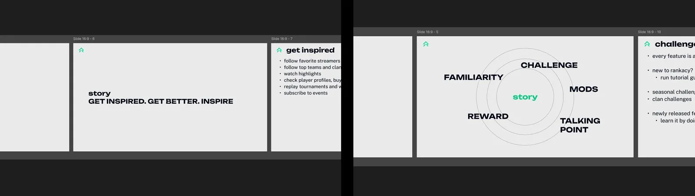
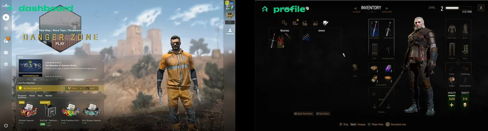
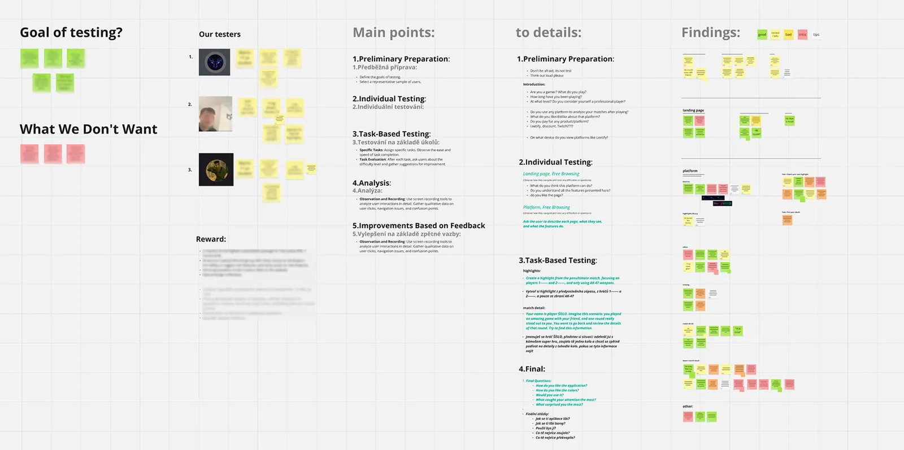
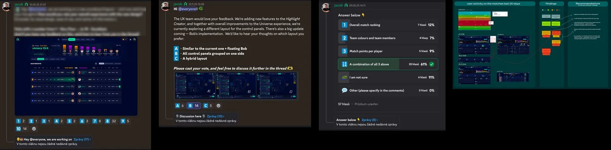

Rankacy was built on a massive volume of gaming data collected directly from CS2. The backend held a growing data library that expanded and deepened over time. At this stage, the product was primarily focused on collecting, exploring and validating what could be extracted from that data.
Rankacy od začátku pracovalo s obrovským množstvím herních dat sbíraných přímo ze CS2. Na backendu vznikala rozsáhlá datová knihovna, která se postupně rozšiřovala a prohlubovala. Produkt v této fázi data především sbíral, zkoumal a ověřoval, co všechno je z nich možné vytěžit.
The product layer was adapting to this evolution. We were finding ways to display, combine and make sense of the data — but without a clearly defined structure or long-term vision. The platform had around 20,000 users, yet still functioned more as an experimental environment for proof of concept, feature testing and user feedback.
Produktová vrstva se tomuto vývoji spíše přizpůsobovaly. Hledali jsme způsoby, jak data zobrazovat, kombinovat a dávat jim smysl, ale bez jasně definované struktury nebo dlouhodobé vize. Platforma měla zhruba 20 000 uživatelů, ale stále fungovala spíš jako experimentální prostředí pro proof of concept, testování funkcí a práci s uživatelskou zpětnou vazbou.
From the early stages, the product suffered from one key problem: features were being added quickly and without clear structure. According to stakeholders, everything was important — which meant nothing was. We were also searching for a way to differentiate from direct competitors — established analytics platforms with millions of players. Instead of copying existing solutions, I started experimenting with an approach based on gamification and storytelling.
Od začátku vývoje produkt trpěl jedním zásadním problémem: funkce přibývaly rychle a bez jasné struktury. Podle stakeholderů bylo důležité všechno, což ve výsledku znamenalo, že nebylo důležité nic. Zároveň jsme hledali cestu, jak se odlišit od přímé konkurence – zavedených analytických platforem s miliony hráčů. Místo kopírování existujících řešení jsem začala experimentovat s přístupem založeným na gamifikaci a storytellingu.
The goal was to make a data-heavy product more accessible and more "game-like", especially for a younger generation of players.
Cílem bylo udělat datově náročný produkt přístupnější a více „game-like", hlavně pro mladší generaci hráčů.
The product had gradually reached a point where we needed to stop and rethink its direction.
Produkt se postupně dostal do fáze, kdy bylo potřeba se zastavit a znovu promyslet jeho uchopení.
Together with a colleague, we prepared a presentation for leadership that defined the platform's core message and storytelling. That moment laid the skeleton for the future product. Even if we didn't always stick to it 100%, it was a pivotal moment — it gave the whole team a shared direction and context.
Společně s kolegou jsme připravili prezentaci pro vedení, která definovala hlavní message platformy a její storytelling. V té chvíli jsme položili základní kostru budoucího produktu. I když jsme se jí později ne vždy drželi na 100 %, byl to důležitý moment – dal celému týmu společný směr a kontext.

With stakeholder buy-in secured, we moved into wireframing a new system. Instead of the classic left sidebar typical of analytics platforms, we looked for an entirely new approach to navigation. We drew inspiration from gaming environments, which meant abandoning established UX solutions and thinking differently.
Získání podpory stakeholderů znamenalo zelenou. Následovalo wireframování nového systému. Místo klasického levého sidebaru, typického pro analytické platformy, jsme hledali úplně nové pojetí navigace. Inspirovali jsme se herním prostředím, což znamenalo opustit zaběhlá UX řešení a začít přemýšlet jinak.
At the same time, we were working with a very data-dense platform. Everything had to feel simple and clear, even with a large amount of information beneath the surface. We started structuring data into layers based on the player's knowledge level, experimenting with visual hierarchy and new UI elements. A key principle emerged: a strong visual centre — like in games, where everything important happens in the middle of the screen.
Zároveň jsme pracovali s velmi datově náročnou platformou. Vše proto muselo působit jednoduše a přehledně, i když se pod povrchem skrývalo velké množství informací. Data jsme začali strukturovat do více vrstev podle úrovně znalostí hráče. Experimentovali jsme s vizuální hierarchií a novými UI prvky, přičemž důležitým principem se stal silný vizuální střed – podobně jako v hrách, kde se vše podstatné odehrává uprostřed obrazovky.
Redesigning the information architecture and navigation — areas largely overlooked until then — was also part of the process. We prioritised core features and either logically subordinated or merged the rest, which also opened up space to better guide player behaviour across the platform.
Součástí redesignu bylo také narovnání informační architektury a navigace, které byly do té doby spíše opomíjené. Stanovili jsme priority základních funkcí a ostatní prvky jsme buď logicky podřadili, nebo sloučili do větších celků. To nám zároveň otevřelo prostor lépe korigovat chování hráčů napříč platformou.

Throughout development we continuously tested and held open discussions in the Rankacy Discord. The community was small but very active and engaged. Gamers are a specific user group, and this chapter proved extremely valuable.
Během vývoje jsme průběžně testovali a vedli otevřené diskuze na Rankacy Discordu. Komunita byla sice malá, ale velmi aktivní a zapojená. Hráči jsou specifická skupina uživatelů, ale právě tahle kapitola byla extrémně přínosná.
We involved users through design comparisons, surveys, polls and open feedback. Development took on a strong community character and users felt like part of it.
Do vývoje jsme zapojovali uživatele formou porovnávání návrhů, anket, hlasování a otevřené zpětné vazby. Vývoj tak měl hodně komunitní charakter a uživatelé se cítili být jeho součástí.
We also ran several live usability tests where users clicked through the new interface for the first time. They were given simple tasks and we observed their reactions. Aside from a few specific friction points, the response was very positive and it quickly became clear that the environment was intuitive even for new users.
Proběhlo také několik živých testování, kdy si uživatelé nový vizuál poprvé sami proklikávali. Dostávali jednoduché úkoly a my sledovali jejich reakce. Kromě několika specifických míst byla odezva velmi pozitivní a rychle se ukázalo, že prostředí je intuitivní i pro nové uživatele.


"We involved users through design comparisons, surveys, polls and open feedback. Development took on a strong community character and users felt like part of it."„Do vývoje jsme zapojovali uživatele formou porovnávání návrhů, anket, hlasování a otevřené zpětné vazby. Vývoj tak měl hodně komunitní charakter a uživatelé se cítili být jeho součástí."
The redesign had a significant impact on the entire project. The decision to overhaul the product in its early phase proved to be exactly right in retrospect.
Redesign měl na celý projekt zásadní dopad. Rozhodnutí „překopat" produkt v rané fázi se zpětně ukázalo jako klíčové.
We laid the groundwork for building a robust data platform for the future. The gaming approach gave us greater creative freedom without sacrificing data depth.
Připravili jsme si půdu pro budování robustní datové platformy do budoucna. Gamingové pojetí nám dalo větší kreativní svobodu, aniž bychom ztratili datovou hloubku.
The design also pushed Rankacy forward visually and helped the platform clearly differentiate itself from the competition.
Design posunul Rankacy výrazně i po vizuální stránce a pomohl platformě jasně se odlišit od konkurence.